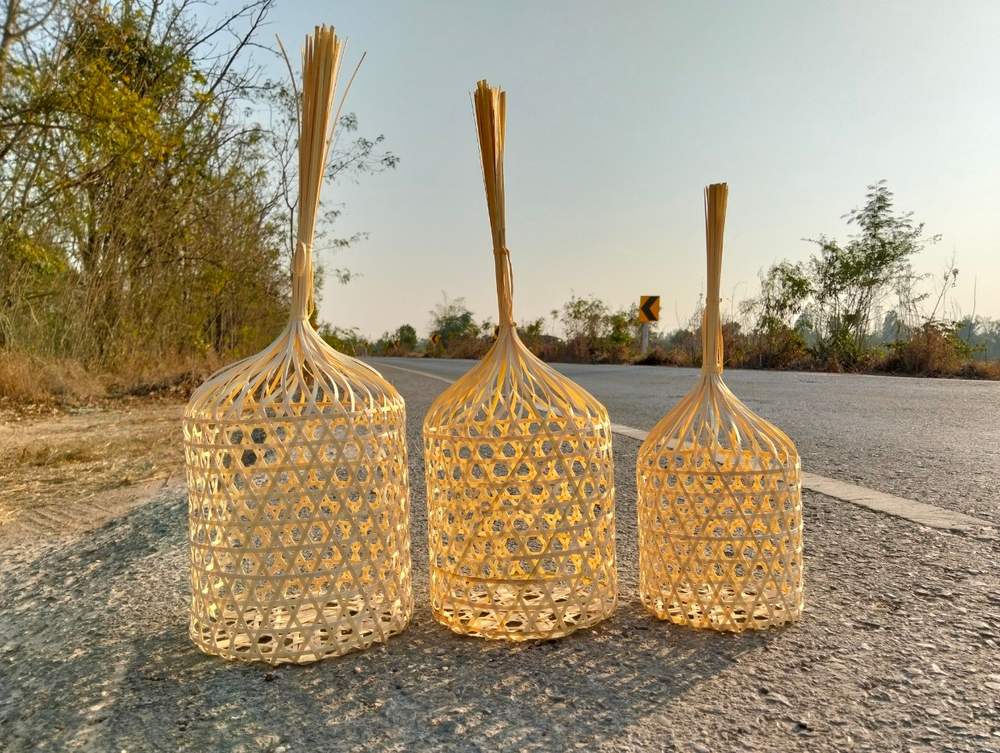
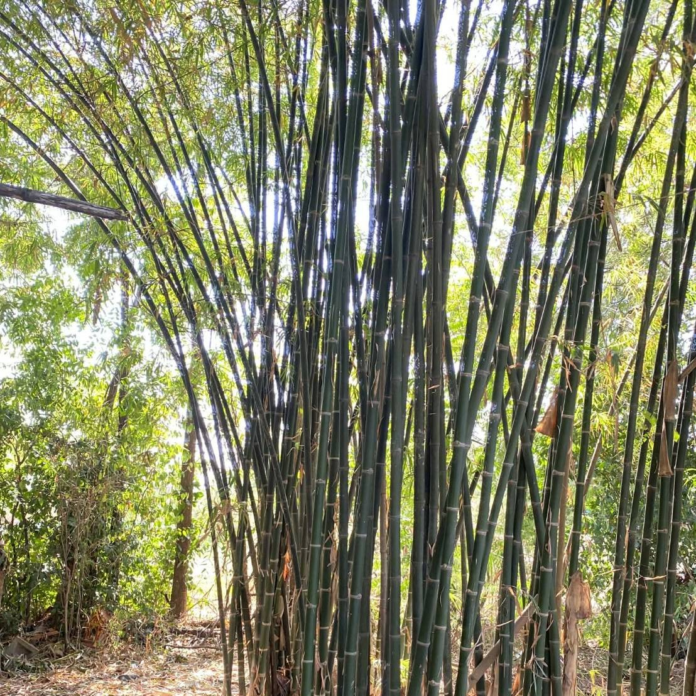

งานจักสานไม้ไผ่ที่สะท้อนภูมิปัญญาท้องถิ่น และการสืบทอดอาชีพจากรุ่นสู่รุ่น

ชะลอมสานเป็นภาชนะจักสานที่ทำจากไม้ไผ่ ใช้ภูมิปัญญาท้องถิ่นในการสานด้วยมือ มีความแข็งแรง ทนทาน และเป็นมิตรต่อสิ่งแวดล้อม
ในอดีตชะลอมสานนิยมใช้ในงานบุญ งานประเพณี และใช้บรรจุอาหารหรือสิ่งของต่าง ๆ ปัจจุบันยังคงได้รับความนิยมในฐานะงานหัตถกรรมพื้นบ้าน
วัสดุหลักที่ใช้ในการทำชะลอมสานคือไม้ไผ่ ซึ่งต้องผ่านการคัดเลือก เหลา และตากให้แห้ง ก่อนนำมาสานเป็นรูปทรงต่าง ๆ
การสานต้องอาศัยความชำนาญและความละเอียด เพื่อให้ชะลอมมีความแข็งแรง และสามารถใช้งานได้จริงในชีวิตประจำวัน

ชะลอมสานสามารถนำไปใช้งานได้หลากหลายรูปแบบ ทั้งในชีวิตประจำวันและงานประเพณี
ใช้บรรจุของทำบุญหรือของถวาย
ใช้ใส่อาหารหรือสินค้าพื้นบ้าน
เป็นของฝากที่มีคุณค่าและเอกลักษณ์